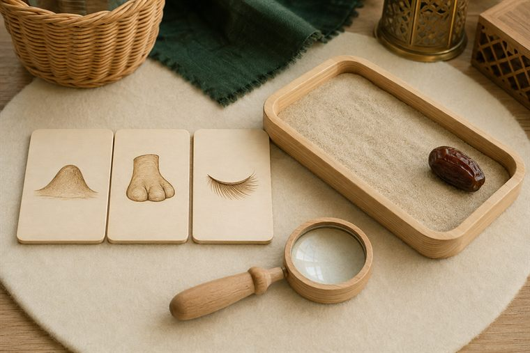
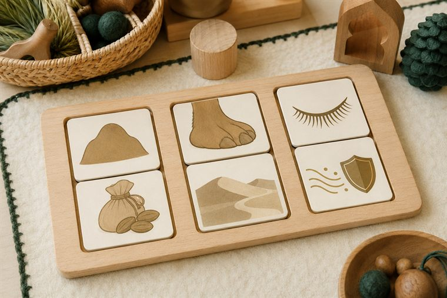
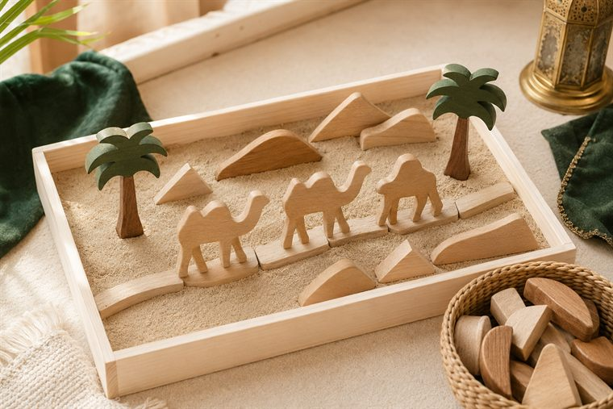
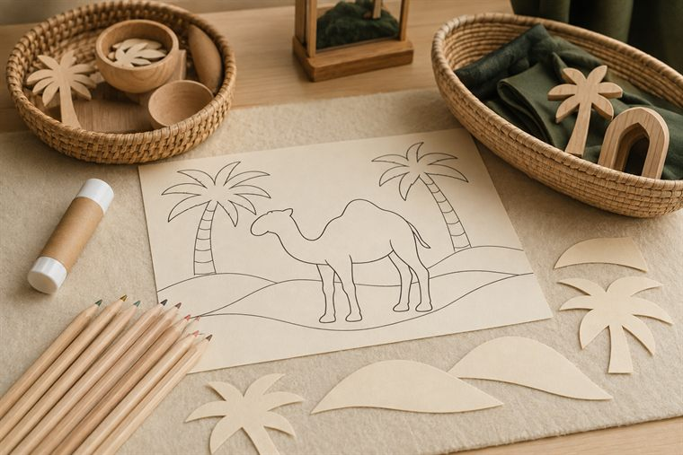

مساحاتُ لعبٍ حرّ بأدواتٍ تعليمية. لكثرة الأعداد نفتح ٤ أركانٍ متوازية بمراكز مختلفة؛ وزّعي المجموعات عليها وتتناوب بينها في الفترتين حتى لا تتكدّس. كل ركنٍ لمسةٌ تطبيقية خفيفة على فكرة اليوم. (أعمار ٥–٦: بناء/تلوين جاهز/قصّ ولصق/ترتيب/اختيار بطاقات/أدوار/حركة — بلا كتابة أو رسمٍ حرّ.)
دروس اليوم المتكاملة: علّمني ربي (التفكّر في الإبل — «أفلا ينظرون إلى الإبل كيف خُلقت»).

🔎 أكتشف ما حولي · «كيف خُلقت الإبل؟»
يلاحظُ الطفل بالمكبّر صورَ الإبلِ وملامحَ خِلقتها (السنامُ · الخفُّ · الرموش) ويتفكّرُ «كيف خُلقت»؛ يلاحظُ دقّةَ التفاصيل ويقولُ: «سبحان مَن خلقها». (ملاحظةٌ حسّية بلا كتابة.)
🧰 الأدوات: صورُ الإبلِ وأجزائها مطبوعة (سنام · خفّ · رموش) · مكبّراتٌ وعدساتٌ يدوية · بطاقاتُ ملامحَ للمطابقة.
📋 دور المعلمة: توجّه النظرَ والتفكّرَ في عجيبِ الخلق: «انظرْ كيف خُلقت الإبلُ؟ مَن أبدع هذه الخِلقة؟»؛ تقودُ ترديدَ «سبحان مَن خلقها»؛ تحتفي بالملاحظةِ والدهشة.
🌱 المعنى المركزي: في خلقِ الإبلِ آياتٌ ودقّةُ صنع؛ سبحان خالقها، فأتفكّرُ وأُسبّح.
📜 قوانين الركن: أبقى في ركني حتى ينتهي الوقت · أحافظ على أدواته · أتشارك وأنتظر دوري · أُعيد الأدوات مرتّبة.

🧩 أدرك وأستمتع · «خِلقةُ الإبل ومنفعتها»
يطابقُ الطفل عضوَ الجملِ بوظيفته المصوّرة (سنامٌ ↔ غذاءٌ مخزون · خفٌّ ↔ مشيٌ في الرمل · رموشٌ ↔ وقايةٌ من الرمل)، ويرتّبُ البطاقاتِ لعبًا بلا كتابة.
🧰 الأدوات: بطاقاتُ مطابقةٍ جاهزة (عضوٌ ↔ وظيفته) · لوحةُ ترتيبٍ مصوّرة · سلالُ تصنيف.
📋 دور المعلمة: تنمذجُ مطابقةً واحدة ثم تترك الطفلَ يستكشف؛ تحاورُه بالصورة: «لماذا جعل اللهُ للجملِ سنامًا وخفًّا ورموشًا؟»؛ تحتفي بالمحاولةِ لا بالصوابِ فقط.
🌱 المعنى المركزي: كلُّ عضوٍ خُلق لحكمةٍ تناسبُ الصحراء؛ سبحان مَن أحكمَ خلقه.
📜 قوانين الركن: أبقى في ركني حتى ينتهي الوقت · أحافظ على أدواته · أتشارك وأنتظر دوري · أُعيد الأدوات مرتّبة.

🧱 ساحة البناء · «أبني قافلةً في الصحراء»
يبني الطفل بالمكعبات والرملِ الحركيّ بحرّيةٍ مشهدَ صحراءٍ وقافلة (كثبانٌ · واحةٌ · مسار)، ويتذكّرُ أنّ اللهَ سخّر الإبلَ لحملِ الأثقال: «سخّر اللهُ الإبلَ، وأنا أبني شكرًا». (لا تلوين هنا — التلوينُ في ركن فنوني.)
🧰 الأدوات: مكعباتٌ خشبية متنوّعة · رملٌ حركيٌّ آمن · قاعدةُ/سجادةُ البناء · مجسّماتُ إبلٍ ونخيلٍ خشبية بلا ملامح.
📋 دور المعلمة: تُتيح البناءَ الحرَّ ثم تنضمّ بلمسةٍ خفيفة؛ تربطُ القافلةَ بتسخيرِ الإبلِ للحمل: «مَن سخّر الإبلَ لتحملَ أثقالَنا في الصحراء؟»؛ تشجّع التعاونَ والشكر.
🌱 المعنى المركزي: سخّر اللهُ الإبلَ لحملِ أثقالنا؛ فأُتقِنُ عملي وأشكرُ مسخّرها.
📜 قوانين الركن: أبقى في ركني حتى ينتهي الوقت · أحافظ على أدواته · أتشارك وأنتظر دوري · أُعيد الأدوات مرتّبة.

🎨 فنوني الجميلة · «ألوّنُ الجملَ في الصحراء»
يلوّنُ الطفل جملًا جاهزًا (ظلٌّ جانبيٌّ بلا ملامح) ومشهدَ صحراء، ثم يقصّ ويلصق قصاصاتِ النخلِ والرمالِ حوله، ويردّدُ «اللهُ خلق الجملَ وأبدع صنعه».
🧰 الأدوات: رسمُ جملٍ ومشهدُ صحراءٍ جاهزٌ للتلوين (ظلٌّ بلا ملامح) · أقلامُ تلوين · قصاصاتُ نخلٍ ورملٍ مصوّرة · مقصٌّ آمن ولاصق.
📋 دور المعلمة: تُسمّي الجملَ ومشهدَ الصحراءِ وتنسبُ الجمالَ والتسخيرَ إلى الله؛ تعين على القصّ واللصق؛ تُثني على الفرحِ والمشاركةِ لا على الإتقان الفنّي.
🌱 المعنى المركزي: عجيبُ خلقِ الجملِ يدعوني للتفكّرِ والشكر؛ فأفرحُ بخلقِ الله وأحمده.
📜 قوانين الركن: أبقى في ركني حتى ينتهي الوقت · أحافظ على أدواته · أتشارك وأنتظر دوري · أُعيد الأدوات مرتّبة.
تفاصيلُ الأركان الستّة وروتينُها في تبويب «خريطة الأركان» أعلى الصفحة، ولكلِّ لقاءٍ ركنان تطبيقيّان داخل دليله.